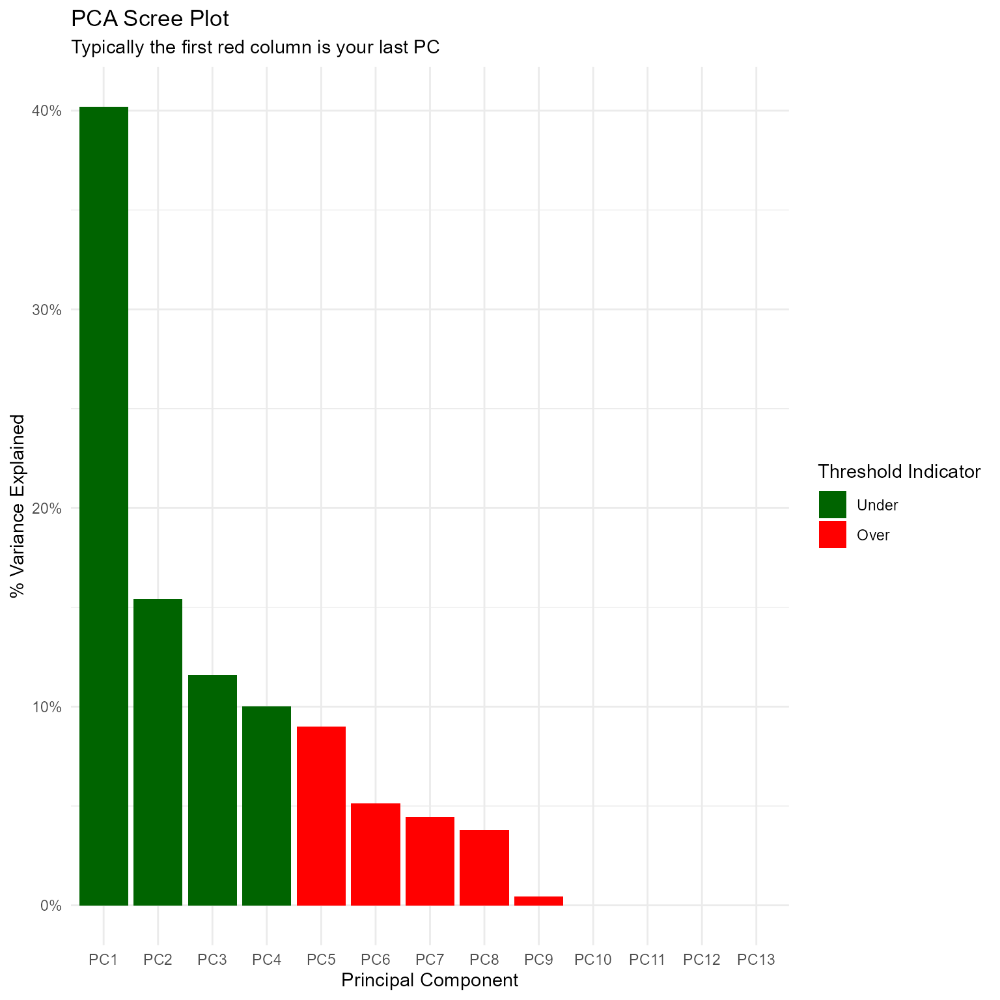

vignettes/getting-started.Rmd
getting-started.RmdFirst of all, thank you for using healthyR.ai. If you encounter issues or want to make a feature request, please visit https://github.com/spsanderson/healthyR.ai/issues
library(healthyR.ai)
#> == Welcome to healthyR.ai ======================================================
#> If you find this package useful, please leave a star: https://github.com/spsanderson/healthyR.ai
#> If you encounter a bug or want to request an enhancement please file an issue at:
#> https://github.com/spsanderson/healthyR.ai/issues
#> Thank you for using healthyR.ai!In this should example we will showcase the pca_your_recipe() function. This function takes only a few arguments. The arguments are currently .data which is the full data set that gets passed internally to the recipes::bake() function, .recipe_object which is a recipe you have already made and want to pass to the function in order to perform the pca, and finally .threshold which is the fraction of the variance that should be captured by the components.
To start this walk through we will first load in a few libraries.
suppressPackageStartupMessages(library(timetk))
suppressPackageStartupMessages(library(dplyr))
suppressPackageStartupMessages(library(purrr))
suppressPackageStartupMessages(library(healthyR.data))
suppressPackageStartupMessages(library(rsample))
suppressPackageStartupMessages(library(recipes))
suppressPackageStartupMessages(library(ggplot2))Now that we have out libraries we can go ahead and get our data set ready.
data_tbl <- healthyR_data %>%
select(visit_end_date_time) %>%
summarise_by_time(
.date_var = visit_end_date_time,
.by = "month",
value = n()
) %>%
set_names("date_col","value") %>%
filter_by_time(
.date_var = date_col,
.start_date = "2013",
.end_date = "2020"
)
head(data_tbl)
#> # A tibble: 6 x 2
#> date_col value
#> <dttm> <int>
#> 1 2013-01-01 00:00:00 2082
#> 2 2013-02-01 00:00:00 1719
#> 3 2013-03-01 00:00:00 1796
#> 4 2013-04-01 00:00:00 1865
#> 5 2013-05-01 00:00:00 2028
#> 6 2013-06-01 00:00:00 1813The data set is simple and by itself would not be at all useful for a pca analysis since there is only one predictor, being time. In order to facilitate the use of the function and this example, we will create a splits object and a recipe object.
splits <- initial_split(data = data_tbl, prop = 0.8)
splits
#> <Analysis/Assess/Total>
#> <76/19/95>
head(training(splits))
#> # A tibble: 6 x 2
#> date_col value
#> <dttm> <int>
#> 1 2020-03-01 00:00:00 1241
#> 2 2014-01-01 00:00:00 1844
#> 3 2014-09-01 00:00:00 1749
#> 4 2015-08-01 00:00:00 1609
#> 5 2017-12-01 00:00:00 1530
#> 6 2014-10-01 00:00:00 1788
rec_obj <- recipe(value ~ ., training(splits)) %>%
step_timeseries_signature(date_col) %>%
step_rm(matches("(iso$)|(xts$)|(hour)|(min)|(sec)|(am.pm)"))
rec_obj
#> Recipe
#>
#> Inputs:
#>
#> role #variables
#> outcome 1
#> predictor 1
#>
#> Operations:
#>
#> Timeseries signature features from date_col
#> Delete terms matches("(iso$)|(xts$)|(hour)|(min)|(sec)|(am.pm)")
get_juiced_data(rec_obj) %>% glimpse()
#> Rows: 76
#> Columns: 20
#> $ date_col <dttm> 2020-03-01, 2014-01-01, 2014-09-01, 2015-08-01, 20~
#> $ value <int> 1241, 1844, 1749, 1609, 1530, 1788, 1474, 1677, 183~
#> $ date_col_index.num <dbl> 1583020800, 1388534400, 1409529600, 1438387200, 151~
#> $ date_col_year <int> 2020, 2014, 2014, 2015, 2017, 2014, 2019, 2018, 201~
#> $ date_col_half <int> 1, 1, 2, 2, 2, 2, 2, 1, 1, 2, 2, 1, 1, 2, 1, 1, 2, ~
#> $ date_col_quarter <int> 1, 1, 3, 3, 4, 4, 3, 2, 2, 4, 4, 2, 1, 4, 2, 2, 3, ~
#> $ date_col_month <int> 3, 1, 9, 8, 12, 10, 7, 5, 5, 12, 11, 4, 2, 12, 4, 5~
#> $ date_col_month.lbl <ord> March, January, September, August, December, Octobe~
#> $ date_col_day <int> 1, 1, 1, 1, 1, 1, 1, 1, 1, 1, 1, 1, 1, 1, 1, 1, 1, ~
#> $ date_col_wday <int> 1, 4, 2, 7, 6, 4, 2, 3, 5, 7, 7, 3, 1, 1, 1, 6, 7, ~
#> $ date_col_wday.lbl <ord> Sunday, Wednesday, Monday, Saturday, Friday, Wednes~
#> $ date_col_mday <int> 1, 1, 1, 1, 1, 1, 1, 1, 1, 1, 1, 1, 1, 1, 1, 1, 1, ~
#> $ date_col_qday <int> 61, 1, 63, 32, 62, 1, 1, 31, 31, 62, 32, 1, 32, 62,~
#> $ date_col_yday <int> 61, 1, 244, 213, 335, 274, 182, 121, 121, 335, 305,~
#> $ date_col_mweek <int> 5, 5, 6, 5, 5, 5, 6, 5, 5, 5, 5, 6, 5, 5, 5, 5, 5, ~
#> $ date_col_week <int> 9, 1, 35, 31, 48, 40, 26, 18, 18, 48, 44, 13, 5, 48~
#> $ date_col_week2 <int> 1, 1, 1, 1, 0, 0, 0, 0, 0, 0, 0, 1, 1, 0, 1, 0, 1, ~
#> $ date_col_week3 <int> 0, 1, 2, 1, 0, 1, 2, 0, 0, 0, 2, 1, 2, 0, 1, 0, 1, ~
#> $ date_col_week4 <int> 1, 1, 3, 3, 0, 0, 2, 2, 2, 0, 0, 1, 1, 0, 1, 2, 3, ~
#> $ date_col_mday7 <int> 1, 1, 1, 1, 1, 1, 1, 1, 1, 1, 1, 1, 1, 1, 1, 1, 1, ~Now that we have out initial recipe we can use the pca_your_recipe() function.
pca_list <- pca_your_recipe(
.recipe_object = rec_obj,
.data = data_tbl,
.threshold = 0.8
)
#> Registered S3 method overwritten by 'quantmod':
#> method from
#> as.zoo.data.frame zooThe function returns a list object and does so insvisible so you must assign the output to a variable, you can then access the items of the list in the usual manner.
The following items are included in the output of the function:
Lets start going down the list of items.
This is the portion you will want to output to a variable as this is the recipe object itself that you will use further down the line of your work.
pca_rec_obj <- pca_list$pca_transform
pca_rec_obj
#> Recipe
#>
#> Inputs:
#>
#> role #variables
#> outcome 1
#> predictor 1
#>
#> Operations:
#>
#> Timeseries signature features from date_col
#> Delete terms matches("(iso$)|(xts$)|(hour)|(min)|(sec)|(am.pm)")
#> Centering for recipes::all_numeric()
#> Scaling for recipes::all_numeric()
#> Sparse, unbalanced variable filter on recipes::all_numeric()
#> No PCA components were extracted.
pca_list$variable_loadings
#> # A tibble: 169 x 4
#> terms value component id
#> <chr> <dbl> <chr> <chr>
#> 1 date_col_index.num -0.0305 PC1 pca_XE6H8
#> 2 date_col_year 0.0261 PC1 pca_XE6H8
#> 3 date_col_half -0.387 PC1 pca_XE6H8
#> 4 date_col_quarter -0.431 PC1 pca_XE6H8
#> 5 date_col_month -0.436 PC1 pca_XE6H8
#> 6 date_col_wday -0.0173 PC1 pca_XE6H8
#> 7 date_col_qday -0.0987 PC1 pca_XE6H8
#> 8 date_col_yday -0.436 PC1 pca_XE6H8
#> 9 date_col_mweek 0.0459 PC1 pca_XE6H8
#> 10 date_col_week -0.436 PC1 pca_XE6H8
#> # ... with 159 more rows
pca_list$variable_variance
#> # A tibble: 52 x 4
#> terms value component id
#> <chr> <dbl> <int> <chr>
#> 1 variance 5.20 1 pca_XE6H8
#> 2 variance 2.01 2 pca_XE6H8
#> 3 variance 1.48 3 pca_XE6H8
#> 4 variance 1.31 4 pca_XE6H8
#> 5 variance 1.15 5 pca_XE6H8
#> 6 variance 0.645 6 pca_XE6H8
#> 7 variance 0.583 7 pca_XE6H8
#> 8 variance 0.555 8 pca_XE6H8
#> 9 variance 0.0581 9 pca_XE6H8
#> 10 variance 0.000241 10 pca_XE6H8
#> # ... with 42 more rows
pca_list$pca_estimates
#> Recipe
#>
#> Inputs:
#>
#> role #variables
#> outcome 1
#> predictor 1
#>
#> Training data contained 76 data points and no missing data.
#>
#> Operations:
#>
#> Timeseries signature features from date_col [trained]
#> Variables removed date_col_year.iso, date_col_month.xts, date_col_hour, d... [trained]
#> Centering for value, date_col_index.num, date_col_year, date_... [trained]
#> Scaling for value, date_col_index.num, date_col_year, date_... [trained]
#> Sparse, unbalanced variable filter removed date_col_day, date_col_mday, date_col_m... [trained]
#> PCA extraction with date_col_index.num, date_col_year, date_col_half... [trained]
pca_list$pca_juiced_estimates %>% glimpse()
#> Rows: 76
#> Columns: 9
#> $ date_col <dttm> 2020-03-01, 2014-01-01, 2014-09-01, 2015-08-01, 20~
#> $ value <dbl> -1.13399419, 1.05434528, 0.70958201, 0.20150983, -0~
#> $ date_col_month.lbl <ord> March, January, September, August, December, Octobe~
#> $ date_col_wday.lbl <ord> Sunday, Wednesday, Monday, Saturday, Friday, Wednes~
#> $ PC1 <dbl> 2.2707521, 3.1807116, -1.2921604, -0.9223952, -3.63~
#> $ PC2 <dbl> 2.3905016, -1.7398980, -1.3724133, -0.8320214, 0.63~
#> $ PC3 <dbl> -0.8853202, -0.1727633, 1.8458672, -0.6439313, -1.8~
#> $ PC4 <dbl> -0.55885528, -0.53374845, 2.27756546, 2.18801700, -~
#> $ PC5 <dbl> 1.67545584, -0.66668542, 1.88942609, -0.49885088, 0~
pca_list$pca_baked_data %>% glimpse()
#> Rows: 95
#> Columns: 9
#> $ date_col <dttm> 2013-01-01, 2013-02-01, 2013-03-01, 2013-04-01, 20~
#> $ value <dbl> 1.9180680, 0.6007094, 0.8801491, 1.1305561, 1.72209~
#> $ date_col_month.lbl <ord> January, February, March, April, May, June, July, A~
#> $ date_col_wday.lbl <ord> Tuesday, Friday, Friday, Monday, Wednesday, Saturda~
#> $ PC1 <dbl> 3.2968605, 2.6472096, 2.2509345, 1.8464430, 0.79419~
#> $ PC2 <dbl> -2.361245, -2.371897, -2.002951, -2.274907, -1.9131~
#> $ PC3 <dbl> 1.3599854, -0.5131293, -2.2417079, 1.6355567, -1.33~
#> $ PC4 <dbl> -0.81387689, 0.57096898, 0.09211354, -0.86741891, -~
#> $ PC5 <dbl> 0.4769781, -0.9387471, 0.8451260, 0.8302813, 0.8128~
pca_list$pca_rotation_df %>% glimpse()
#> Rows: 13
#> Columns: 13
#> $ PC1 <dbl> -0.03051201, 0.02614255, -0.38727742, -0.43066973, -0.43616349, -~
#> $ PC2 <dbl> 0.698955035, 0.698827156, -0.025892454, -0.017363780, 0.004134227~
#> $ PC3 <dbl> 0.053199738, 0.054172636, 0.155675217, 0.092152173, -0.008668624,~
#> $ PC4 <dbl> -0.00682823, -0.01210206, 0.21453277, -0.03201051, 0.04016172, 0.~
#> $ PC5 <dbl> -0.07985125, -0.08822811, -0.10802194, -0.06743439, 0.06574572, -~
#> $ PC6 <dbl> -0.014372778, -0.015215200, -0.129471108, 0.039277410, 0.00868128~
#> $ PC7 <dbl> 0.002547454, 0.003795940, -0.304651332, -0.137801761, -0.01225580~
#> $ PC8 <dbl> -0.039060394, -0.032148815, -0.113212297, -0.002218334, -0.049576~
#> $ PC9 <dbl> -0.01831118, 0.01050285, 0.80311766, -0.27739076, -0.22050291, 0.~
#> $ PC10 <dbl> -0.012720817, 0.012799378, -0.004315465, -0.302990267, -0.3712867~
#> $ PC11 <dbl> 0.0275867941, -0.0280538640, 0.0010682611, 0.1383923477, -0.70770~
#> $ PC12 <dbl> -3.085158e-03, 2.605532e-03, -2.825047e-03, -7.683643e-01, 3.3724~
#> $ PC13 <dbl> -7.058834e-01, 7.055101e-01, 7.874457e-05, 3.655406e-02, 2.693170~
pca_list$pca_variance_df %>% glimpse()
#> Rows: 13
#> Columns: 6
#> $ PC <chr> "PC1", "PC2", "PC3", "PC4", "PC5", "PC6", "PC7", "PC8"~
#> $ var_explained <dbl> 3.996538e-01, 1.547069e-01, 1.141010e-01, 1.011440e-01~
#> $ var_pct_txt <chr> "39.97%", "15.47%", "11.41%", "10.11%", "8.88%", "4.96~
#> $ cum_var_pct <dbl> 0.3996538, 0.5543608, 0.6684617, 0.7696058, 0.8583708,~
#> $ cum_var_pct_txt <chr> "39.97%", "55.44%", "66.85%", "76.96%", "85.84%", "90.~
#> $ ou_threshold <fct> Under, Under, Under, Under, Over, Over, Over, Over, Ov~
pca_list$pca_variance_scree_plt